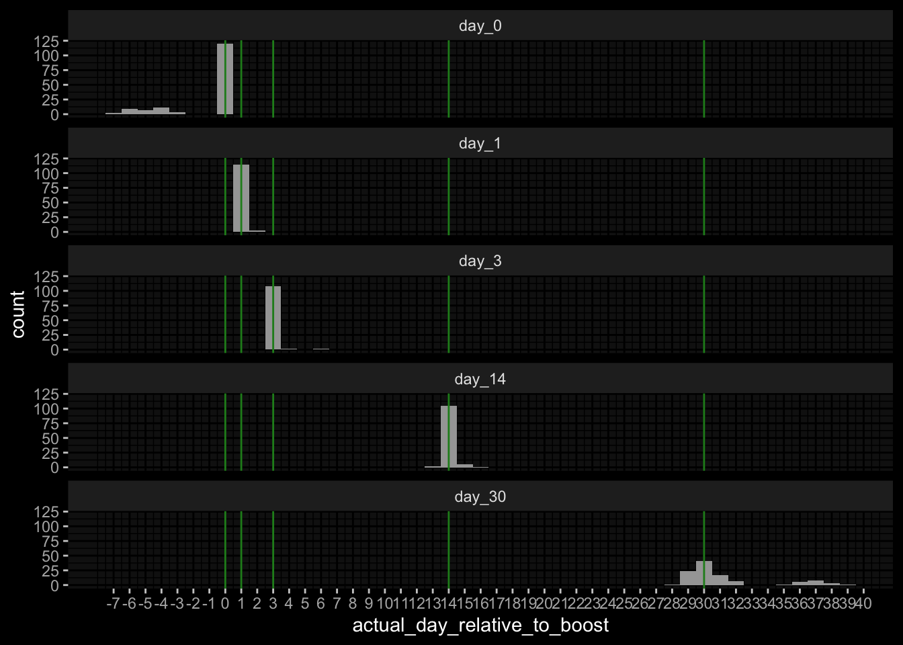
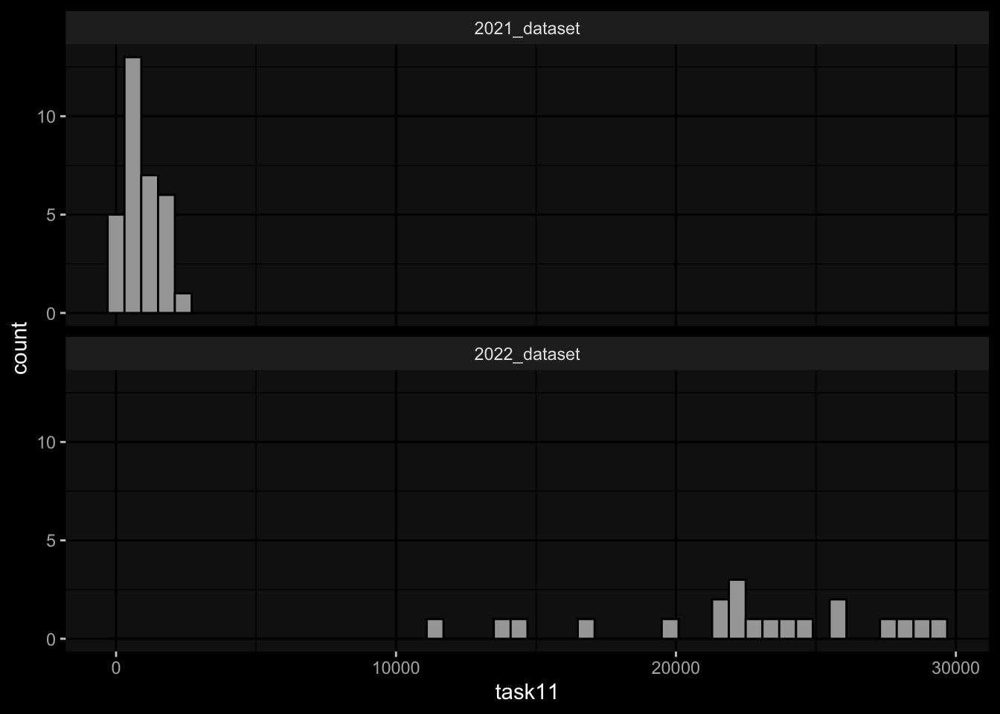

Code
suppressPackageStartupMessages({
library(tidyverse)
library(ggdark)
library(magick)
})
source(file.path("..", "src", "read_data.R"))
source(file.path("..", "src", "colors.R"))
source(file.path("..", "src", "generate_targets.R"))suppressPackageStartupMessages({
library(tidyverse)
library(ggdark)
library(magick)
})
source(file.path("..", "src", "read_data.R"))
source(file.path("..", "src", "colors.R"))
source(file.path("..", "src", "generate_targets.R"))input_dir = file.path("..", "data")meta_data <- read_harmonized_meta_data(input_dir)
experimental_data <- read_raw_experimental_data(input_dir)
experimental_data <- filter_experimental_data(meta_data, experimental_data)pbmc_cell_frequency | Removed 550 specimens because missing in meta dataplasma_ab_titer | Removed 6931 specimens because missing in meta dataplasma_cytokine_concentration_by_olink | Removed 495 specimens because missing in meta datapbmc_cell_frequency | Removed 56 features because not in feature subsetplasma_ab_titer | Removed 48 features because not in feature subsetplasma_cytokine_concentration_by_olink | Removed 234 features because not in feature subsett_cell_polarization | Removed 3 features because not in feature subsetplasma_cytokine_concentration_by_olink | Removed 300 features because qc warningplasma_ab_titer | Removed 10540 measurements because wrong unit usedplasma_cytokine_concentration_by_olink | Removed 2400 measurements because wrong unit usedwide_experimental_data <- generate_wide_experimental_data(experimental_data=experimental_data,
impute="zero")plasma_cytokine_concentration_by_olink | NA Fraction: 0.0110795454545455 | Imputed with zerost_cell_activation | NA Fraction: 0.0576923076923077 | Imputed with zerost_cell_polarization | NA Fraction: 0.0134099616858238 | Imputed with zeroscelltype_meta <- read_celltype_meta(input_dir)
gene_meta <- read_gene_meta(input_dir)
protein_meta <- read_protein_meta(input_dir)specimen_list <- get_specimen_per_day(meta_data)
purrr::imap(specimen_list, ~ .x %>% dplyr::mutate(day=.y)) %>%
dplyr::bind_rows() %>%
dplyr::mutate(day = factor(day, levels=paste0("day_", c(0, 1, 3, 14)))) %>%
ggplot() +
geom_histogram(aes(x=actual_day_relative_to_boost), binwidth=1) +
geom_vline(xintercept=c(0,1,3,14), color="forestgreen") +
facet_wrap(~day, ncol=1) +
ggdark::dark_mode(verbose=FALSE) +
scale_x_continuous(breaks=seq(min(unlist(acceptable_differences)),
max(unlist(acceptable_differences))))
1.1) Rank the individuals by IgG antibody levels against pertussis toxin (PT) that we detect in plasma 14 days post booster vaccinations.
1.2) Rank the individuals by fold change of IgG antibody levels against pertussis toxin (PT) that we detect in plasma 14 days post booster vaccinations compared to titer values at day 0.
targets_task_1 <- generate_targets_task_1(meta_data=meta_data,
experimental_data=experimental_data,
experimental_data_settings=experimental_data_settings,
specimen_list=specimen_list)plot_targets(targets_task_1)targets_task_1 %>%
dplyr::left_join((meta_data %>% dplyr::select(subject_id, dataset) %>% dplyr::distinct()),
by="subject_id") %>%
ggplot() +
geom_histogram(aes(x=task11), bins=50, color="black") +
facet_wrap(~dataset, ncol=1) +
ggdark::dark_mode()
targets_task_1 %>%
dplyr::left_join((meta_data %>% dplyr::select(subject_id, dataset) %>% dplyr::distinct()),
by="subject_id") %>%
ggplot() +
geom_histogram(aes(x=task12), bins=50, color="black") +
facet_wrap(~dataset, ncol=1) +
ggdark::dark_mode()
2.1) Rank the individuals by predicted frequency of Monocytes on day 1 post boost after vaccination.
2.2) Rank the individuals by fold change of predicted frequency of Monocytes on day 1 post booster vaccination compared to cell frequency values at day 0.
targets_task_2 <- generate_targets_task_2(meta_data=meta_data,
experimental_data=experimental_data,
experimental_data_settings=experimental_data_settings,
specimen_list=specimen_list)
targets_task_2plot_targets(targets_task_2)
targets_task_2 %>%
dplyr::left_join((meta_data %>% dplyr::select(subject_id, dataset) %>% dplyr::distinct()),
by="subject_id") %>%
ggplot() +
geom_histogram(aes(x=task21), bins=50, color="black") +
facet_wrap(~dataset, ncol=1) +
ggdark::dark_mode()
targets_task_2 %>%
dplyr::left_join((meta_data %>% dplyr::select(subject_id, dataset) %>% dplyr::distinct()),
by="subject_id") %>%
ggplot() +
geom_histogram(aes(x=task22), bins=50, color="black") +
facet_wrap(~dataset, ncol=1) +
ggdark::dark_mode()
3.1) Rank the individuals by predicted gene expression of CCL3 on day 3 post-booster vaccination.
3.2) Rank the individuals by fold change of predicted gene expression of CCL3 on day 3 post booster vaccination compared to gene expression values at day 0.
targets_task_3 <- generate_targets_task_3(meta_data=meta_data,
experimental_data=experimental_data,
experimental_data_settings=experimental_data_settings,
specimen_list=specimen_list,
gene_meta=gene_meta)
targets_task_3plot_targets(targets_task_3)
targets_task_3 %>%
dplyr::left_join((meta_data %>% dplyr::select(subject_id, dataset) %>% dplyr::distinct()),
by="subject_id") %>%
ggplot() +
geom_histogram(aes(x=task31), bins=50, color="black") +
facet_wrap(~dataset, ncol=1) +
ggdark::dark_mode()
targets_task_3 %>%
dplyr::left_join((meta_data %>% dplyr::select(subject_id, dataset) %>% dplyr::distinct()),
by="subject_id") %>%
ggplot() +
geom_histogram(aes(x=task32), bins=50, color="black") +
facet_wrap(~dataset, ncol=1) +
ggdark::dark_mode()
Task 1: Substantial differences in the marginal distributions of the target variables between the cohorts / years.
Task 2: Substantial differences in the marginal distributions of the target variables between the cohorts / years.
Task 3: Small differences in the marginal distributions of the target variables between the cohorts / years.